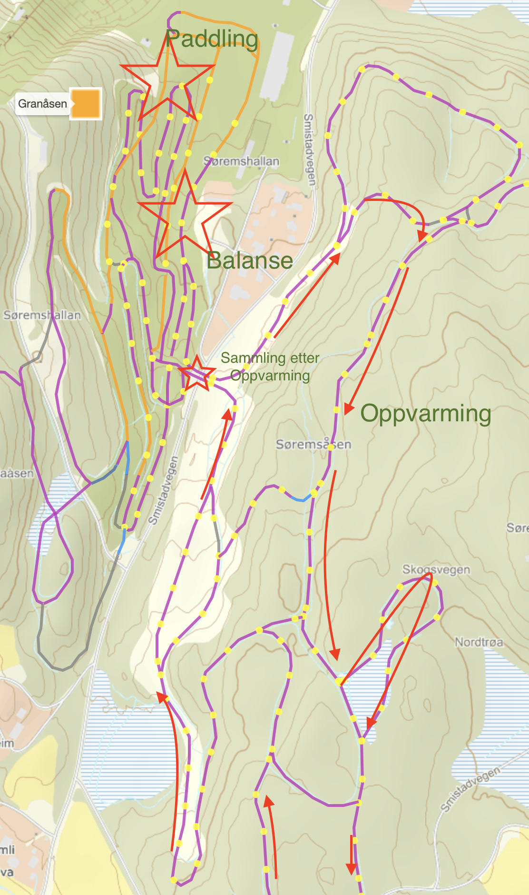

Fokus på Teknikk (Paddling, Balanse), Felleskap, Skiglede:
Oppvarming 15'
Balanse 10'
Hoveddel Teknikk 50'
Gruppe: Balanse
Gruppe: Paddling
Stafett 15'
Strindheimrop
Oversikt Løype

Opplegg
Oppmøte/Oppvarming
Kort trenersamtale/koordinasjon under oppmøte
Rolig oppvarming via brua
En trener i front/midt/bak
Kort samling underveis, samling på brua etter oppvarming
Eventuelt snarvei for de bakerste.
Teknikk
Teknikk trening i to grupper. Bytt grupper etter 25'.
Gruppe Balanse
Ide:
Flat nedoverbakke uten staver og på en ski (bytt side hver gang, flere øvelser under)
Motbakke med tydelig armsving
Gjennomføring:
Introduser øvelsen, forklar grunnprinsipper og sammenheng
Barn beveger seg ned og opp, 30 m lengde, 5 m avstand
Nedover mot fartsretning men hold riktig side (pass på andre skiløyper)
Ros, og tilbakemelding
Kort samling og refleksjon (hvilke side er best i balanse)
Flere øvelser:
Stå på en ski
prøv begge beina
gli lengst mulig
prøv å svinge på en ski
løft på den andre skia
rist på armene og på den skia som er i lufta
kjør sammen to og to, hold hverandre i hendene
Lukk det ene øyet
kjør nedover og lukk det ene øyet
rist på armer + hodet og lukk det ene øyet
stå på en ski og lukk det ene øyet
Skikjøring + ballkast (to og to sammen)
kast ball (eller vott) til hverandre på vei ned
bagge kjører på en ski mens en kaster
sett opp portaler av staver, kjør under + kaste ball
Gruppe Paddling
Mål:
Alle kan paddling men ofte har vi for mye bevegelser i overkroppen og ikke nok trykk i beina. Vi skal jobbe med saken, men først et riktig og et feil eksempel:
Riktig
Feil
Ide:
Først i flat terreng etterpå ved bakken
Flere øvelser (frem og tilbake) som bygger opp på hverandre
Fokus på jevnt beinarbeid og stabil overkropp
Begge sider som hengsider, lav frekvens først, varier frekvens etterpå
Gjennomføring:
Introduser teknikk, forklar prinsippene
Øvelse i stand (se video)
Hammer-øving (hamre en spiker på hengsiden, stå høyt på motsiden)
Hammer-øving med overgang til en stav
Motbakke med kort glifase og fokus på stabil overkropp
Gjør som en verdensmester
Tips fra Johannes:
Spiss ankelvinkel
Skia under kropp
Nese - Kne - Tå (en linie) på hengside
Aktive skyv med begge ben
Frekvens i spurt
Armpendel i spurt
Stafett
Som vanlig eller litt nytt (med balanse element, se video)